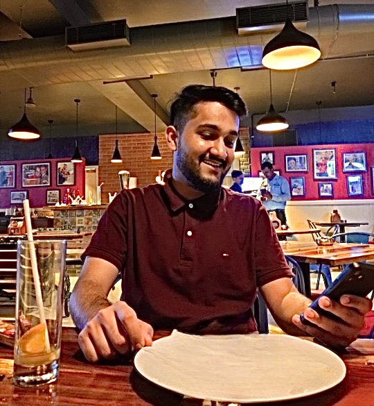
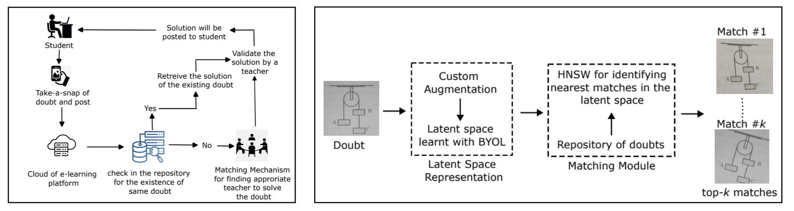

|
Hi, I am a Research Data Scientist at Vedantu, where my job is to come up with robust A.I. based solutions
that are label as well as resource efficient in nature. My work covers the domain of vision, natural language & user centric tabular data originating in
the EdTech sector. The goal of my research at Vedantu under Dr. Sivanagaraja Tatinati is to
leverage the true power of self-supervision to build more accurate models that cater to the needs of students & company stakeholders.
|
 |
{kind=link}
|
How to make machines think ?
|
|
Vedant S. Joshi, Dr. Sivanagaraja Tatinati, Dr. Yubo Wang | PrePrint arXiv, 2022 Doubts are a natural outcome of any student's learning journey & solving them immediately becomes imperative for any EdTech platform so that the steady growth of learning for every child can be maintained. In this era of Big Data the volume of data being generated on Vedantu is huge & this is also applicable for the doubts being asked on our platform. The traditional way of solving doubts by Subject Matter Experts(SME) is time consuming, redundant & infeasible in nature. Assigning one SME per doubt for every student is unimaginable. Therefore coming up with a system that can find a possible solved match for an asked doubt & create clusters of semantically similar doubts so that the redundancy in answering the same question by SMEs is reduced, would help our platform immensely. In this work we solved a sub-problem of diagram based matching for doubt questions. For the non-diagram questions we rely on the power of OCRs & transformers to build strong text matching engines but for pure reverse image search we come-up with a diagram extraction & matching module which allowed us to prevent re-answering of the same question & reduce the redundancy of diagram based doubts from 9.5 lakh individual points to 2.5 lakh clusters in our database. We also use the SOTA, self supervised framework BYOL in this project because there are a lot of similar diagram images in our training set & utilising the instance discrimination objective in SimCLR & MoCo for negative pairs had a high chance of pushing away the latent representations of 2 semantically relevant diagram images thereby affecting our top-k search scores. |
|
Our implementation is an improved version of the BYOL which is trained on diagram images extracted from a custom trained Scaled YOLOv4 module that gave a mean average precision of 90% for diagram detection. The main contribution of our work was to come up with a new, domain specific augmentation pipeline that modelled the possible noises generated by a student while uploading an image on our platform. The newly designed augmentations were guided by mutual information metrics to capture flashes, skews, random camera noise etc. but at the same time not loose semantic relevance of the matching pairs. The augmentations played a crucial role towards learning of noise invariant, compressed representations of diagrams & aided in achieving more accurate as well as relevant matches for a given input query. The diagrams on the right show the improved convergance of our models along with stronger clustering abilities along the diagonals of image similarity matrices. In order to deploy the model, the vectors computed by our Custom BYOL were searched using approximate K-NN algorithms such as Heirarchial Navigable Small Worlds (HNSW) & the search space was reduced by performing clustering on the vectors using UMAP & HDBSCAN. Each cluster was represented by a centroid which was the key vector in the HNSW search space. |
|
Vedant S. Joshi, Dr. Ebin Deni Raj | 2021 8th International Conference on Smart Computing & Communications (ICSCC) The amazing ability of our human mind to handle multiple input sources at once & make sense of the environment in which we are present is truly extra-ordinary. Along with this ability, our mind is also dynamic enough to adapt to situations where we loose certain input sources & still make the best possible use of the information availale to us. We all think that speech understanding is a skill that is entirely dependent on hearing but vision also plays a key hidden role which helps us to disambiguate a lot of confusing scenarios. For people who have trouble in hearing, they rely a lot on their vision to understand speech. Based on this observation, I worked on my thesis titled For Your Eyes Only , to build an end to end deep learning system which is able to accurately map a set of lip movements in a given video to its corresponding character. |
|
The system is trained on a subset of words from the large scale Oxford-BBC Lip Reading in the Wild (LRW) Dataset. The whole problem statement is formulated around single word prediction, character by character because the aim of our thesis was to come up with a system that could learn lip movement to character mapping using only a limited set of words in training. This approach of character level prediction made our system more generalized in nature, incase we encountered a previously unseen word. The out of vocabulary words cannot be handled by simple classification models. We make use of 112 words & the videos for each of these words are processed according to the timestamp at which they are spoken. To further improve the model performance, we make use of D-Lib facial features library to extract only the lip region from these videos with some buffer. Also speaking speed normalisation is applied so that every word video would be 22 frames long in the temporal dimension so that the training data can be efficiently batched into tensors.
For baseline performance we repurpose DeepMind's LipNet model from sentence level to word level predictor & train
it from scratch on the LRW subset. To learn further complex frame interactions & improve model explainability, we add
Bahdanau attention mechanism in between the the 3D ConvNet encoder & GRU decoder which
is depicted by the heatmap on the left. The final prediction is made by using greedy CTC decoding techniques in order to get a single character that was
scaled to multiple frames during the alignment learning.
|
|
|
|
Vedant S. Joshi, Dr. Ebin Deni Raj, Jeena Thomas | Journal of Interconnection Networks, 2022 |
|
Owing to the landscape & natural conditions, coconut is an important fruit in Kerala. Coconut farms are an important aspect of the state's economy therefore a lot of citizen's livelihood is dependent on this fruit. Plucking coconuts from plam trees is a huge challenge since it involves scaling large heights without proper equipment which could lead to serious injuries for the daily wage workers. Inspired by this, I started to work on my Honours degree thesis project Coco-Layers. The whole project was divided into 2 modules :
Result shown below. |


|
|
|
In my free time I have the habit of contributing to the open source community by writing Kaggle notebooks from a mathematical point of view for the latest ongoing research in the field of self supervised learning. My notebooks are a step by step implementation of the latest frameworks on small scale datasets along with links to other research papers that might aid fellow researchers in their problem statements.